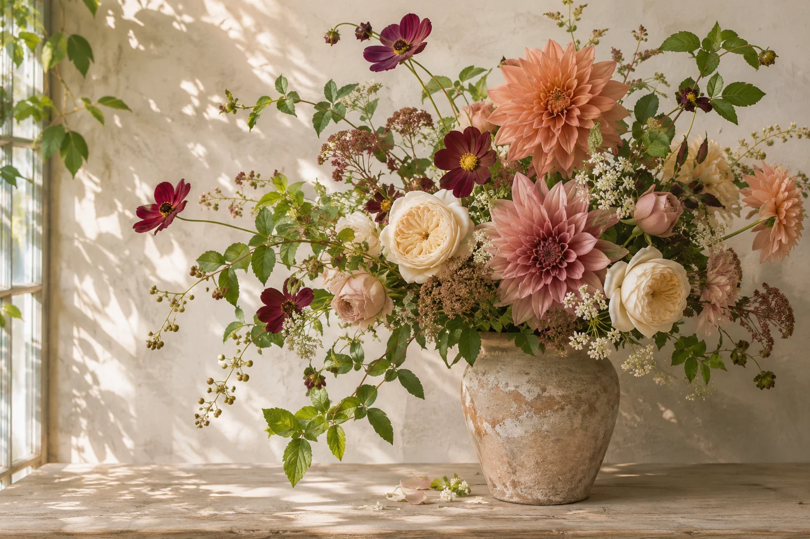
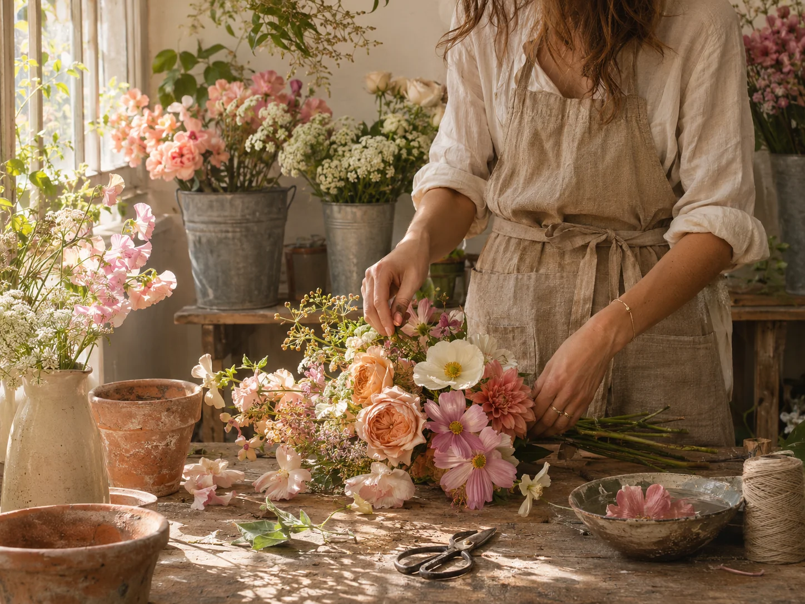

FLORES COM SENTIMENTO
Flores para
o que as palavras
não conseguem dizer.
Buquês da estação, preparados com carinho para os gestos do dia a dia e os grandes momentos da vida.
Um toque de liberdade. Sempre com carinho.

Entregues com amor.
DIRETO DA NOSSA MESA DE FLORES
As belezas da estação.
UM GESTO PODE DIZER MUITO
O que você
gostaria de dizer?
Deixe as flores falarem por você.

Algumas flores. Muito carinho.UM OLÁ DO NOSSO PEQUENO ESTÚDIO
Feito à mão.
Presenteado de coração.
Há algo especial em um lugar cheio de flores. O movimento tranquilo. As pétalas espalhadas. As possibilidades de um punhado de hastes.
Esse é o espírito da Petal & Stem. Arranjos com movimento, cores surpreendentes e muita personalidade. Porque os presentes mais especiais carregam um pouco de quem os oferece.
Um pouco mais sobre nósCom carinho, Petal & Stem
Sobre este estúdio demonstrativo
A Petal & Stem é uma floricultura fictícia, criada como um protótipo interativo. Os buquês, a história do estúdio, os preços, os horários e a área de entrega em Portland são ilustrativos. As imagens florais foram criadas para este projeto.
 Mais flores.
Mais flores.Mais vezes.
UM CARINHO PARA ESPERAR COM ALEGRIA
Faça das flores
um hábito bonito.
O melhor da estação, no seu ritmo. Para a mesa da cozinha, para alguém especial ou simplesmente para você.
Explore um plano demonstrativo. Sem compromisso ou pagamento.
CUIDADO EM CADA DETALHE
Das nossas mãos
até a sua porta.
Embaladas com carinho e com suas palavras junto delas. Veja como funciona nossa entrega local demonstrativa.
Onde vocês entregam?
Nossa área demonstrativa atende aos códigos postais (ZIP) 97201, 97202, 97203, 97204, 97205 e 97206 de Portland. O frete por buquê custa US$ 6 para 97201–97202 e US$ 9 para 97203–97206. Consulte o código postal na página do buquê. A cobertura real ainda não está integrada.
Quando minhas flores podem chegar?
Escolha uma data disponível com pelo menos dois dias de antecedência, de terça a sábado, nos próximos 30 dias. O buquê Espírito Livre precisa de cinco dias. As datas seguem o fuso de Portland, com janela demonstrativa das 9h às 18h. Não há entrega no mesmo dia ou com hora marcada.
Meu buquê será igual ao da foto?
As flores acompanham as estações. Podemos substituir uma variedade por outra de valor igual ou superior, preservando a paleta, o tamanho e o estilo. As fotos mostram o tamanho Médio. O vaso só está incluído quando você seleciona essa opção.
Posso incluir uma mensagem?
Sim! Escreva até 240 caracteres na página do buquê e edite a mensagem no carrinho. O cartão escrito à mão está incluído. Lembre de assinar seu nome para que a pessoa saiba quem deixou o dia dela mais bonito.
Como cuidar das minhas flores?
Retire a embalagem, corte de 1 a 2 cm das hastes na diagonal e coloque o buquê em um vaso limpo com água fresca. Retire as folhas submersas e troque a água a cada dois dias. Evite calor, sol direto e frutas maduras. As flores são decorativas, não comestíveis; mantenha longe dos animais de estimação.
Posso fazer um pedido real aqui?
Esta é uma loja demonstrativa. Você pode explorar as flores, consultar datas ilustrativas e salvar o carrinho neste navegador. Pagamentos e entregas reais não estão integrados; esta página não cria nem confirma pedidos.
Sempre há um motivo para dar flores.
Encontre o seu